Климатическая станция BORK A704
Технология очистки электролизованной водой и функция активной стерилизации – у бактерий нет шансов!
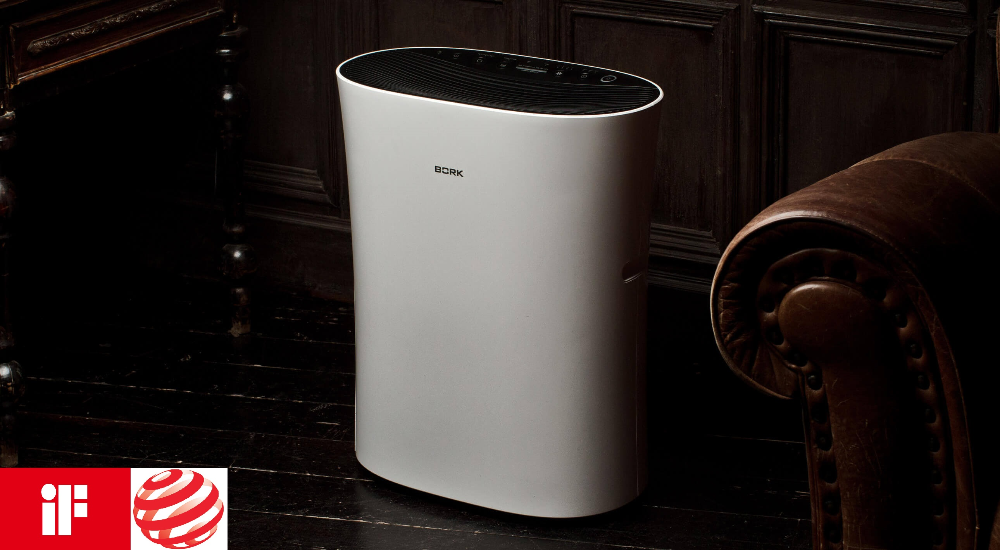За выдающийся дизайн и передовые технологии климатическая станция BORK A704 удостоена престижных наград IF design award и Reddot design award.
Получение электролизованной воды

BORK A704 использует ионы хлора, присутствующие в водопроводной воде, для получения хлорноватистой кислоты и гидроксильного радикала с помощью электролиза. Под действием слабого электрического тока в водопроводной воде образуются два активных соединения (хлорноватистая кислота и гидроксильный радикал), эффективно уничтожающие болезнетворные микроорганизмы. Таким образом, происходит очистка воды и воздуха, проходящего через фильтр увлажнения.
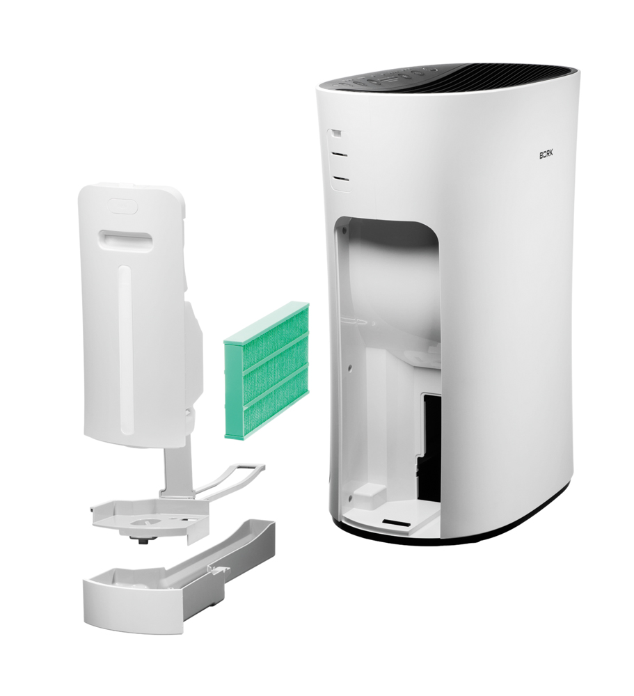Электролизованная вода способна за один проход деактивировать 99% вирусов, переносимых по воздуху.
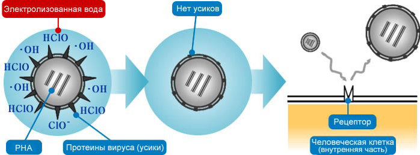Хлорноватистая кислота и другие компоненты электролизованной воды воздействуют на протеины на поверхности вируса, деактивируя и разрушая их. Вирусы не проникают в клетки и остаются неактивными.
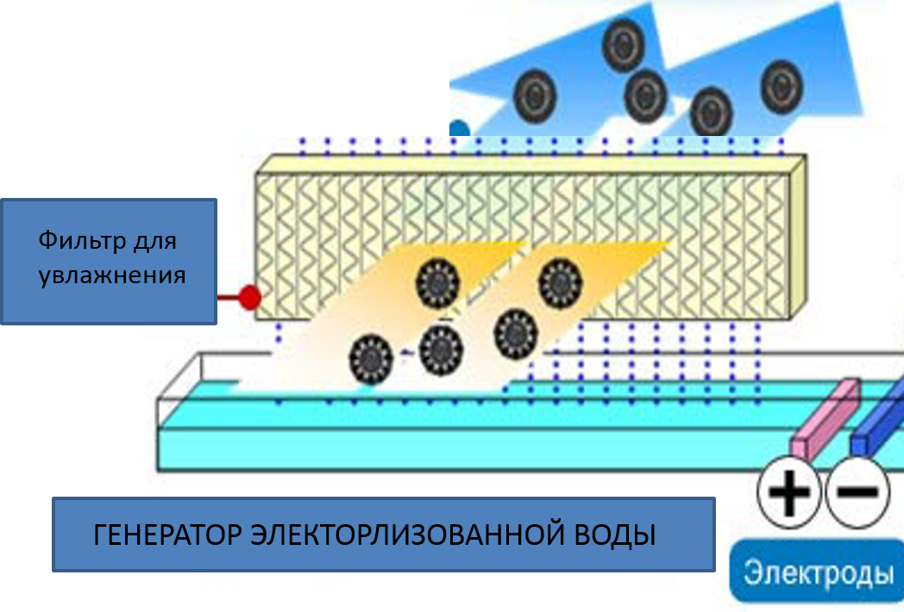Электролизованная вода окисляет и растворяет органические загрязнения, молекулы сильно пахнущих веществ, устраняя неприятные запахи. Уничтожает болезнетворные споры и бактерии. Дезактивирует вирусы и пыльцу растений, вызывающую аллергии.
Активная стерилизация воздуха
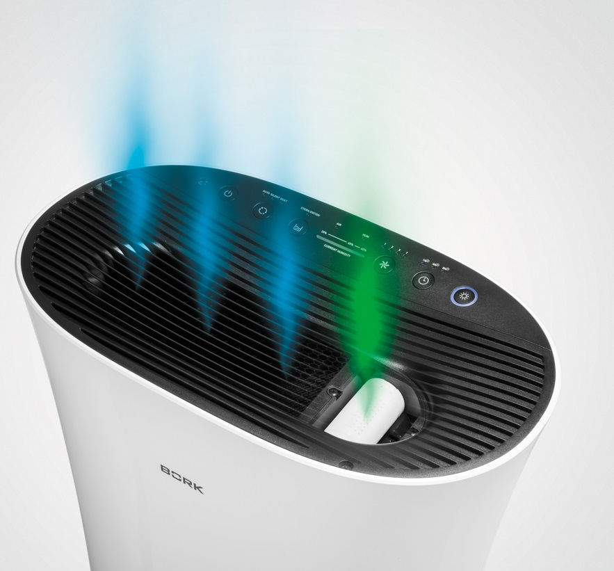Фильтр стерилизации воздуха содержит терпены — органические вещества, обладающие антибактериальными свойствами, растворяющие стенки клеток бактерий и разрушающие их структуру.
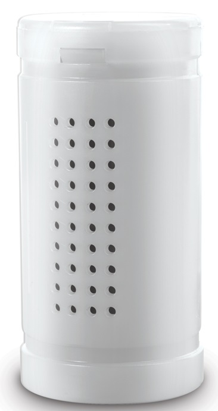Фильтр активной стерилизации. Используются 100% натуральные эфирные масла сосны, кипариса.
Терпены — основной компонент смол и бальзамов, в больших количествах содержатся в хвойных растениях и эфирных маслах и являются главным ингредиентом фитонцидов.
Деликатный аромат эфирных масел снимает стресс, позволяя почувствовать себя в хвойном лесу.
Природное увлажнение
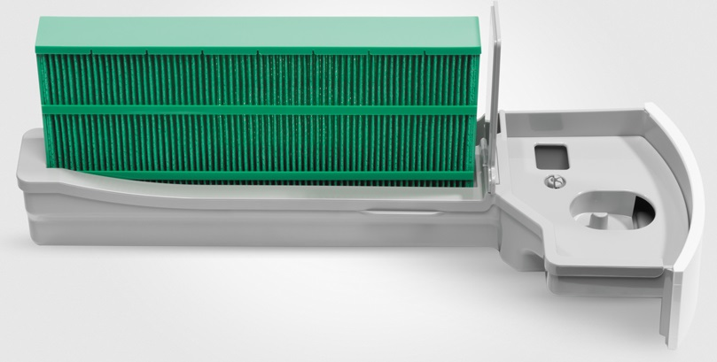Вода, испаряясь естественным образом с поверхности фильтра, находится в мелкодисперсном газообразном состоянии, как в природе - 0,1 нм.
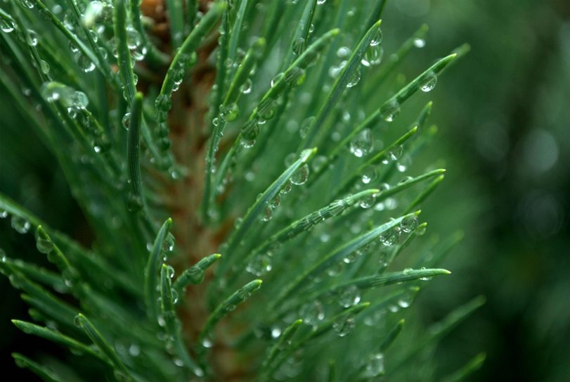Увлажнение воздуха путем естественного испарения воды с медицинской точки зрения является самым оптимальным для детей, взрослых и домашних животных. При естественном увлажнении на мебели, бытовой технике и паркете не образуется белый налет солей кальция. Функция увлажнения активируется автоматически при наличии воды в емкости.
Схема системы фильтрации

Предварительный фильтр
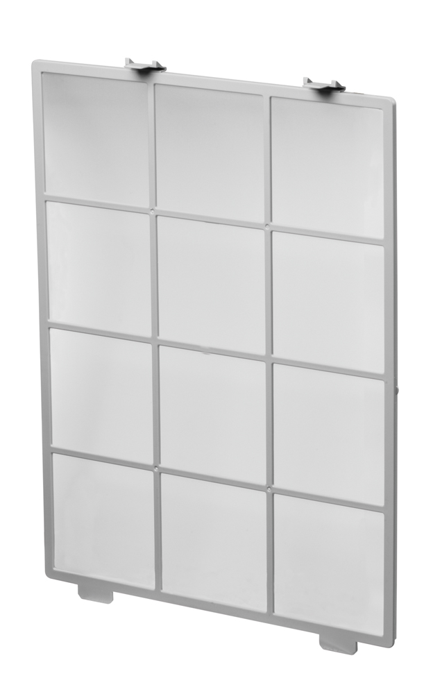Этот фильтр удаляет сравнительно большие частицы пыли или плесени, человеческие волосы и шерсть домашних животных.
Угольный фильтр из карболена
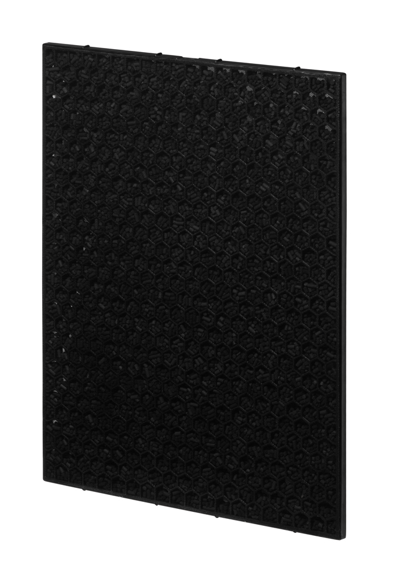Угольный фильтр устраняет летучие и полулетучие органические соединения, включая вредные газы, резкие запахи. Структура фильтра состоит из сот, что позволяет обеспечить максимальную эффективность очистки воздуха на всей поверхности фильтра.
Специальный фильтр ALLERGIST
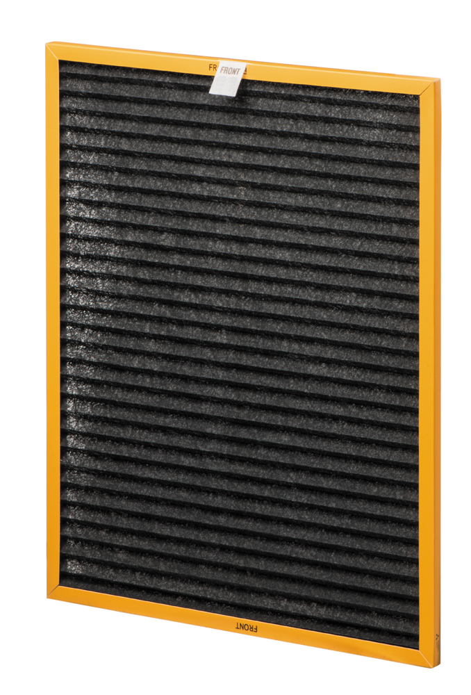Эффективен в борьбе с аллергенами, пыльцой, вирусами. Фильтр выполнен из нетканого материала и обработан несколькими специальными компонентами. Антиаллергенная пропитка эффективно борется с более чем с 300 видами аллергенов растительного происхождения. Карболен (активированный уголь) в мелкодисперсном состоянии является важным компонентом данной пропитки, за счет чего повышается его поверхность (1 грамм до 1500 м²), и соответственно – эффективность борьбы с газами и запахами. Платина в мелкодисперсном состоянии используется, как активный компонент для устранения летучих органических соединений (VOC).
(VOC) Volatile Оrganic Сompound – это органические химические вещества, которые имеют высокое давление паров в обычных условиях при комнатной температуре. Другими словами, быстро испаряются.
VOC содержатся в грунтовках, шпаклевках, красках, лаках, различных пластиках, декоративных покрытиях и многих строительных материалах, т.к. они влияют на скорость высыхания, контролируют вязкость и твердость, поэтому концентрация VOC значительно выше внутри помещения (до 10 раз выше), чем на открытом воздухе.
VOC приводят к различным заболеваниям, таким как головная боль, глазные заболевания, заболевания дыхательных путей, а также снижение нашей иммунной системы и даже к образованию рака. Характерным примером данной группы загрязнителей воздуха в помещениях является формальдегид.
Фильтр TRUE HEPA
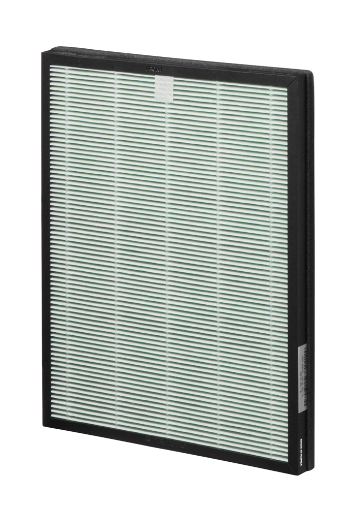Фильтр TRUE HEPA улавливает микрочастицы размером 0,3 мкм до 99,97%. Только 3 частицы из 10.000 могут пройти через фильтр. Толщина человеческого волоса ≈ 100 мкм 1 мкм = 0,001 мм.
Антибактериальная пропитка уничтожает микробы и плесень как на поверхности фильтра, так и внутри него, обеспечивая продолжительный срок эксплуатации.
Фильтр естественного увлажнения
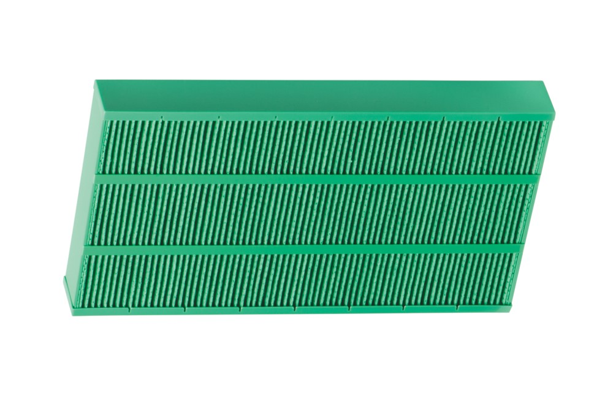Влага равномерно распределяется по всему объему помещения и не содержит в себе солей жесткости. Использование синтетического материала и вискозного волокна с антибактериальной и антиплесневой пропиткой позволило продлить безопасный срок службы фильтра.
Вы можете приобрести отдельно и установить любой из указанных ниже специальных фильтров
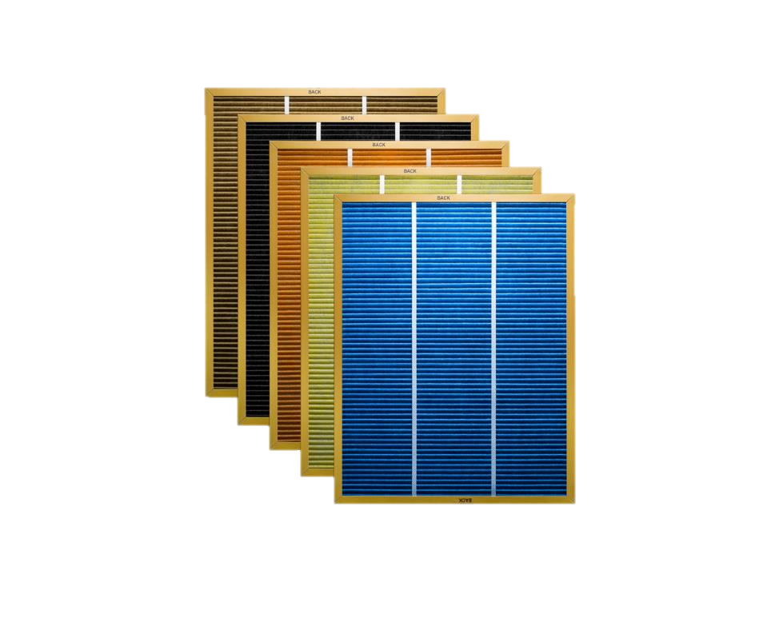Панель управления
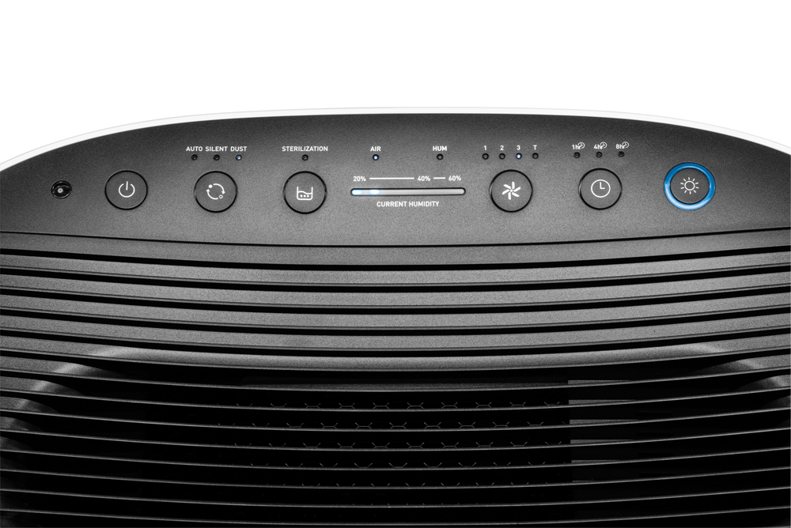Автоматический режим
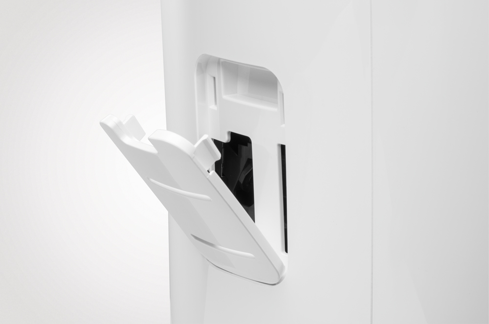Пользователю нет необходимости выбирать режим работы. Автоматический контроль скорости потока воздуха в соответствии с уровнем загрязнения, определяемым датчиком качества воздуха, с целью более эффективной очистки. Этот режим подходит для использования в качестве основного.
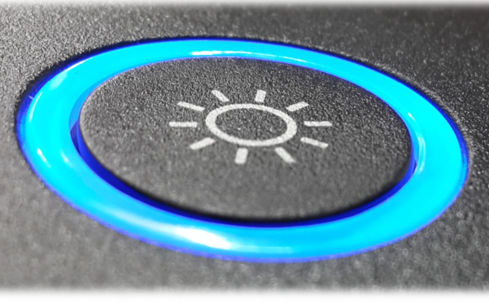В случае необходимости цветовую индикацию можно отключить в любой момент нажатием на соответствующую кнопку.
Режим Silent
Данный режим создан для вашего спокойного сна при минимальном уровне шума и световой индикации. При работе в автоматическом режиме переход в режим SILENT осуществляется автоматически с помощью датчика света.
Режим Dust
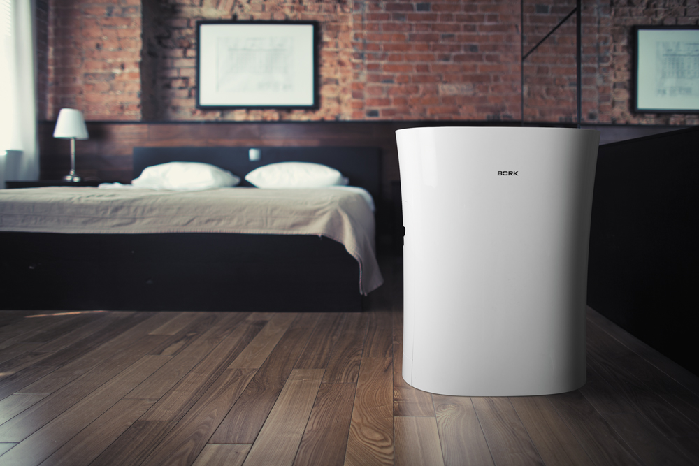Данный режим создан для ускоренной очистки помещения от пыли. После включения режима очиститель воздуха устанавливает скорость воздушного потока — 3 на 10 минут, чтобы перемешать воздух в помещении. По прошествии 10 минут включается минимальная скорость на 30 минут, очищая помещение от пыли, находящейся в воздухе. Режим DUST цикличен.
Чувствительность датчика качества воздуха
Воздухоочиститель должен находиться в каждой комнате квартиры.
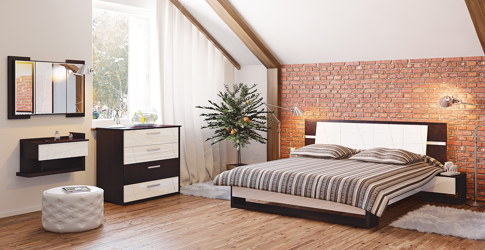Больше всего времени человек проводит в спальне. Чтобы во время сна дышать чистым и увлажнённым воздухом рекомендуется установить датчик на самый чувствительный уровень.
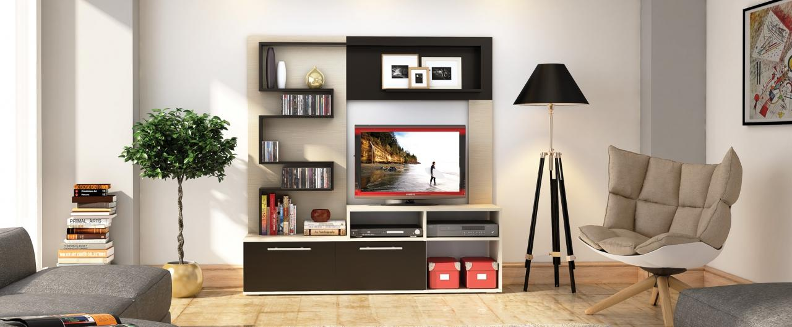Второе место, с точки зрения пребывания человека, занимает гостиная. Тут имеет смысл выбрать среднюю настройку чувствительности датчика.
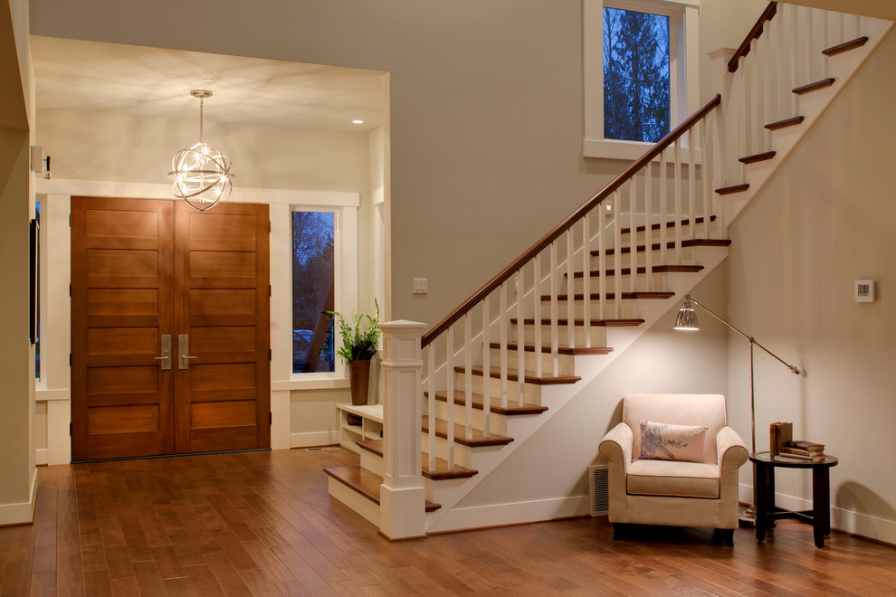И наконец, в прихожей и кухне можно выбрать самый низкий уровень чувствительности.
Если человек, приобретающий климатическую станцию страдает от аллергии, то датчик загрязнения воздуха должен быть установлен на максимальную чувствительность, независимо от комнаты, в которой установлен прибор.
Аргументы для продажи
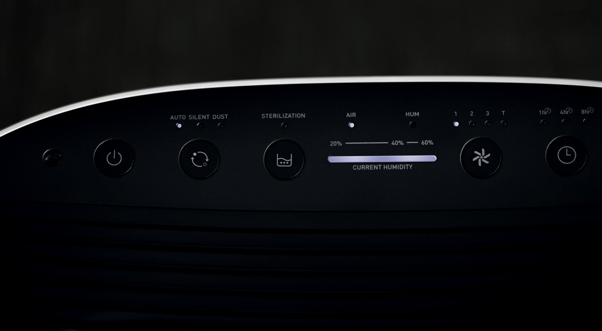- Электролизованная вода - инновационная система очистки воздуха. Эффективность очистки 99% за один проход
- Активная стерилизация. Терпены
- Естественное природное увлажнение
- 5 специализированных климатических станций в 1. Специальные фильтры
- Удобное, простое и понятное управление
- Автоматические режимы работы
- Автоматический переход в режим SILENT. Датчик света
- Датчик качества воздуха с настройкой чувствительности
- Отключение станции по таймеру.
Технические характеристики
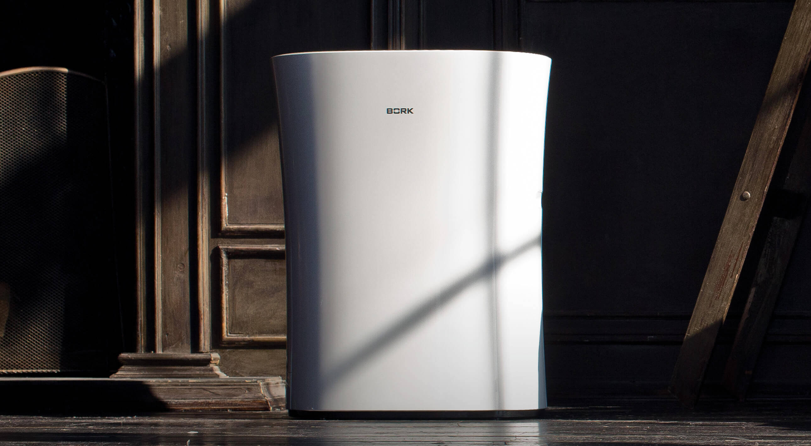
Напряжение: 220 В
Потребляемая мощность:
- в режиме очистка 45 Вт
- в режиме очистка и увлажнение 65 Вт
Производительность по очистке: 320 м³/ч
Производительность по увлажнению: 550 мл/ч
Объём емкости для воды: 3 литра
Материал корпуса: пластик
Тип управления: электронное
Уровень шума:
- MAX 50,8 дБ
- MIN 21,8 дБ
Цвет: белый
Габариты (В×Ш×Д): 61.1 × 48.9 × 28.7 см
Вес: 10 кг
Гарантия: 1 год
Страна производитель: Корея